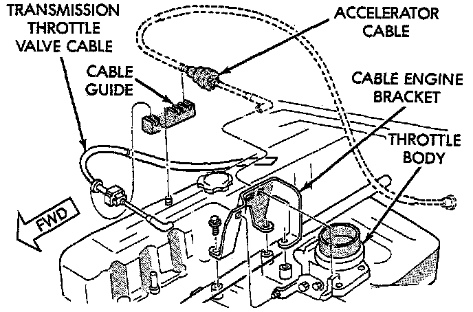

Throttle Valve Cable/Linkage: Description and Operation

GENERAL INFORMATION
The transmission throttle valve is operated by the valve body throttle lever. The throttle lever is actuated by a cable connected to the engine throttle body lever. A lock button at the engine end of the cable provides for cable adjustment.
A correctly adjusted throttle valve cable, will cause the throttle lever on the transmission to move simultaneously with the throttle body lever from the idle position. Proper adjustment allows simultaneous movement without causing the transmission throttle lever to move ahead of, or lag behind the throttle body lever.